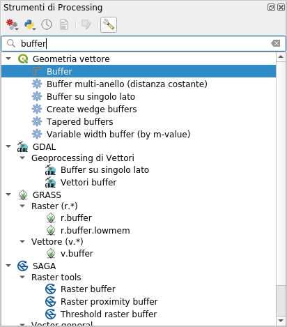
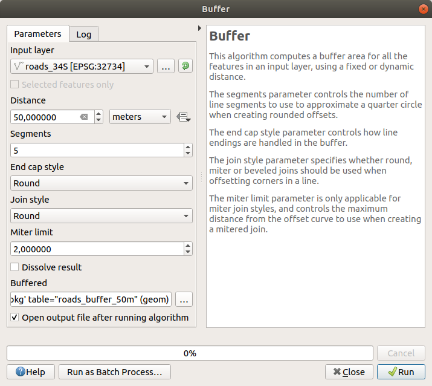
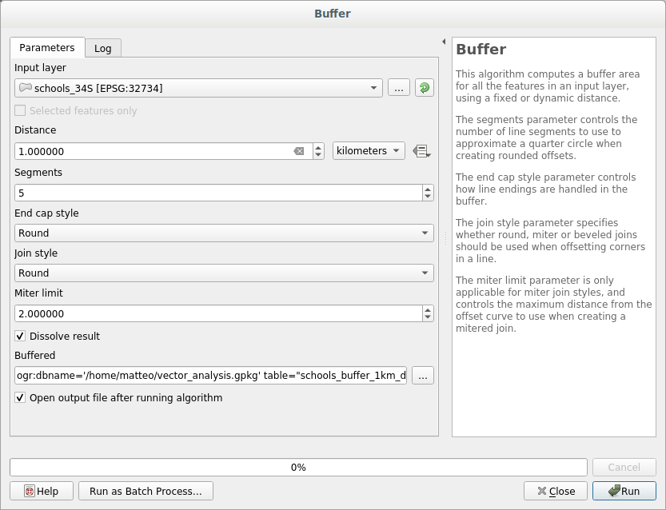
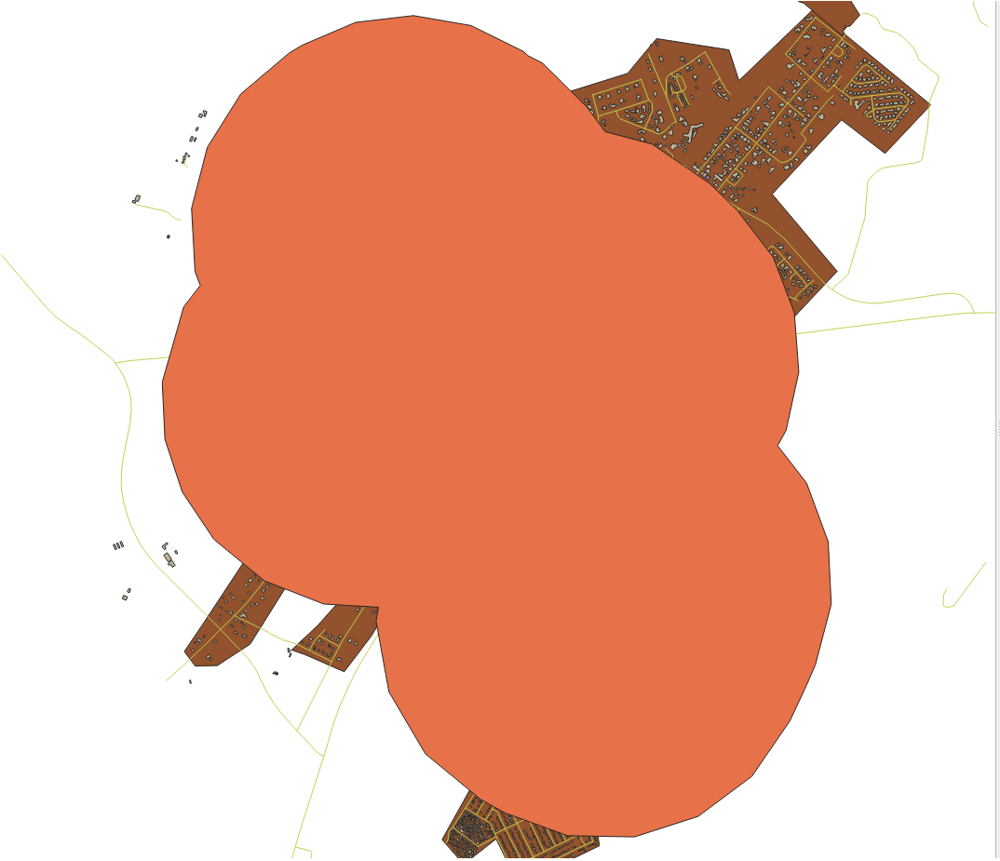
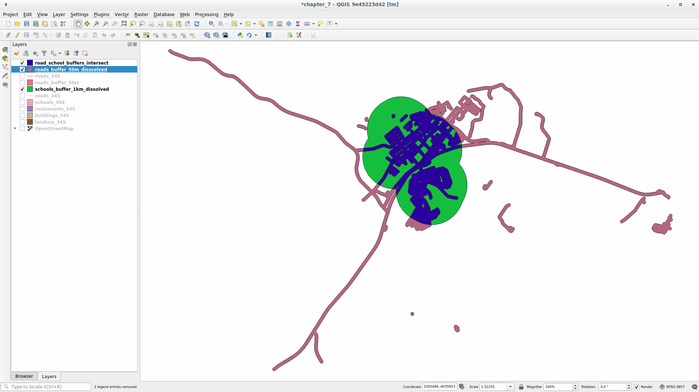

重要
翻訳は あなたが参加できる コミュニティの取り組みです。このページは現在 100.00% 翻訳されています。
6.2. レッスン: ベクタ解析
また、ベクタデータを解析することで、異なる地物が空間的にどのように相互作用しているかを明らかにすることができます。解析に関連する機能はたくさんあるので、ここではそのすべてを紹介することはしません。むしろ、問題を提起し、QGISが提供するツールを使ってそれを解決してみることにします。
このレッスンの目標: 質問を尋ね、分析ツールを使ってそれを解決すること。
6.2.1. ★☆☆ （初級レベル） GISプロセス
その前に、問題を解決するためのプロセスの概要を簡単に説明しておくと便利でしょう。それは次のものです:
問題の状態
データの入手
問題の分析
結果のプレゼン
6.2.2. ★☆☆ （初級レベル） 問題
解決する問題を決定することから手順を開始しましょう。たとえば、不動産業者が以下の基準を持っている顧客のために Swellendam にある居住用の不動産を探しています：
それは Swellendam にあること
それは学校から車で行ける距離であること（たとえば1km）
100平方m以上の大きさであること
主要な道路から50m以内であること
レストランの500m以内であること
6.2.3. ★☆☆ （初級レベル） データ
これらの質問に答えるために、以下のデータが必要になります:
その地域の住宅用の物件（建物）
街の中と周辺の道路
学校とレストランの位置
建物の大きさ
これらのデータはOSMを通じて入手可能であり、このマニュアルを通じて使用したデータセットもこのレッスンに使用できることが分かるはずです。
他の地域のデータをダウンロードしたい場合は、 Introduction Chapter にジャンプして、その方法を読んでください。
注釈
OSMのダウンロードは一貫したデータフィールドを持っていますが、範囲と詳細は多様になってしまいます。たとえば選択した領域にレストランについての情報が含まれていないとわかった場合は、別の地域を選択することが必要な場合があります。
6.2.4. ★☆☆ （初級レベル） 理解しよう: プロジェクトを開始してデータを取得する
まず、作業するデータを読み込むする必要があります。
新しいQGISプロジェクトを始めます
必要であれば、背景地図を追加することができます。ブラウザ を開き、 XYZ Tiles メニューから OSM 背景地図をロードします。

training_data.gpkgGeopackageデータベースには、この章で使用するほとんどのデータセットがあります:buildingsroadsrestaurantsschools
それらを読み込み、さらに
landuse.sqliteも読み込みます。レイヤの範囲を拡大すると、Swellendam, 南アフリカが表示されます。
先に進む前に、特定の道路タイプだけを扱うために、 roads レイヤーをフィルタリングします。
OSM データセットの中のいくつかの道路は
unclassified,tracks,path,footwayとしてリストアップされています。これらの道路をデータセットから除外し、この演習に適した他の道路タイプに焦点を当てたいと思います。さらに、OSMのデータはどこでも更新されるとは限らないので、``NULL``の値も除外する。
``roads``レイヤを右クリックし、 フィルタ... を選択します。
ポップアップするダイアログで、これらの地物を次の式でフィルタリングします:
"highway" NOT IN ('footway', 'path', 'unclassified', 'track') AND "highway" IS NOT NULL
NOTとINの2つの演算子を連結すると、highwayフィールドにこれらの属性値を持つすべての地物を除外することができます。IS NOT NULLとAND演算子を組み合わせると、highwayフィールドに値がない道路は除外されます。roads レイヤの横にある
 アイコンに注目してください。このレイヤはフィルタが有効になっているので、プロジェクトで利用できない地物があることを思い出すのに役立ちます。
アイコンに注目してください。このレイヤはフィルタが有効になっているので、プロジェクトで利用できない地物があることを思い出すのに役立ちます。
すべてのデータが入った地図は、次のように表示されます:

6.2.5. ★☆☆ （初級レベル） 自分でやってみよう: レイヤCRSの変換
レイヤ内の距離を測定するつもりなので、レイヤの CRS を変更する必要があります。これを行うには、各レイヤを順番に選択し、新しい投影法で新しいレイヤに保存し、その新しいレイヤをマップにインポートする必要があります。
例えば、各レイヤを ESRI シェープファイル形式のデータセットとしてエクスポートしたり、既存の GeoPackage ファイルにレイヤを追加したり、別の GeoPackage ファイルを作成し、そこに新たに再投影したレイヤで埋め尽くしたりすることが可能です。ここでは、最後の方法を紹介しますので、 training_data.gpkg はきれいなままです。ご自分に合ったワークフローを自由に選択してください。
注釈
この例では、WGS 84 / UTM zone 34S CRSを使用していますが、あなたの地域に適したUTM CRSを使用する必要があります。
レイヤ パネルで roads レイヤを右クリックします
エクスポート --> 新規ファイルに地物を保存... をクリックします
名前をつけてベクタレイヤを保存 ダイアログで、 GeoPackage を 形式 として選択します
... の ファイル名 をクリックし、新しい GeoPackage の名前を
vector_analysisにしますレイヤ名 を
roads_34Sに変更しますCRS を WGS 84 / UTM zone 34S に変更します
OK をクリックします:

これにより、新しいGeoPackageデータベースが作成され、
roads_34Sレイヤが追加されます。この作業を各レイヤに対して繰り返してください。
vector_analysis.gpkgGeoPackage ファイルに元の名前の後に_34Sを付けた新しいレイヤを作成します。macOS では、ポップアップするダイアログで Replace ボタンを押して QGIS に既存の GeoPackage を上書きさせます。
注釈
既存の GeoPackage にレイヤを保存する場合、同じ名前のレイヤが既に存在しなければ、QGIS はそのレイヤを GeoPackage 内の既存のレイヤの隣に 追加 します。
プロジェクトから古いレイヤを削除する
すべてのレイヤの処理が完了したら、任意のレイヤを右クリックして レイヤの領域にズーム をクリックすると、地図が関心域にフォーカスされます。
さて、OSMデータをUTM投影に変換したので、計算を始められます。
6.2.6. ★☆☆ （初級レベル） 理解しよう: 学校と道路からの距離
QGISでは、任意のベクタオブジェクト間の距離を計算することができます。
roads_34Sとbuildings_34Sのレイヤのみが表示されていることを確認します（作業中の地図を扱い易くするため）をクリックして、QGISの解析の コア を開きます。基本的に、 すべての アルゴリズム（ベクタ および ラスタ分析）がこのツールボックスで利用可能です。
まずは Buffer アルゴリズムを使用して
roads_34Sの周囲の領域を計算します。このアルゴリズムは グループで見つけることができます。
または、ツールボックスの上部にある検索メニューに
バッファと入力してください: ダブルクリックしてアルゴリズムダイアログを開きます
入力レイヤとして
roads_34Sを選択し、 距離 を50に設定し、残りのパラメータは既定値を使用します。既定の 距離 はメートル単位です。これは、入力データセットが、メートルを基本的な測定単位として使用する投影座標系なためです。コンボボックスを使って、キロメートルやヤードなど、他の投影単位を選択することができます。
注釈
地理座標系を持つレイヤにバッファを作成しようとすると、プロセシングは警告を発し、メトリック座標系にレイヤーを再投影するよう提案します。
既定で プロセシング は一時的なレイヤを作成し、それらを レイヤ パネルに追加します。また、その結果を GeoPackage データベースに追加することもできます:
... ボタンをクリックして、 GeoPackageに保存... を選択します
新しいレイヤの名前
roads_buffer_50mにしますこれを
vector_analysis.gpkgファイルに保存します
 実行 をクリックし、次に バッファ ダイアログを閉じます
地図は次のようになっているでしょう：

新しいレイヤが レイヤ リストの一番上にある場合、おそらく地図の大部分が見えなくなりますが、これで地域内の道路から50m以内のすべての地域が表示されます。
バッファの中に、それぞれの道路に対応する明確な地域があることに注意してください。この問題を解消するために;
roads_buffer_50m レイヤのチェックを外し、 結果を融合する を有効にしてバッファを作成し直します。

出力を roads_buffer_50m_dissolved という名前で保存します
実行 をクリックして、 バッファ ダイアログを閉じます
レイヤを レイヤ パネルに追加すると、次のような表示になります:

今不要な下位区分はありません。
注釈
ダイアログの右側にある Short Help は、このアルゴリズムがどのように動作するかを説明しています。より詳しい情報が必要な場合は、下部の ヘルプ ボタンをクリックすると、アルゴリズムのより詳細なガイドが表示されます。
6.2.7. ★☆☆ （初級レベル） 自分でやってみよう: 学校からの距離
上記と同じアプローチを使用し、学校のためのバッファを作成します。
半径は 1 km とします。新しいレイヤーを vector_analysis.gpkg ファイルに schools_buffer_1km_dissolved という名前で保存します。
答え
バッファダイアログはこのように表示されます:

バッファ距離 は 1 キロメートルです。
Segments to approximate の値は 20 に設定されます。これはオプションですが、出力バッファがより滑らかになるため、推奨されています。これを:
 これと比較してみましょう:

最初の画像は Segments to Approximate の値を 5 に設定したバッファ、2番目は 20 に設定したバッファを示します。この例では、微妙な違いですが、高い値の方がバッファのエッジが滑らかになっていることがわかります。
6.2.8. ★☆☆ （初級レベル） 理解しよう: 重複している地域
これで、道路から50m以内の地域と、1km以内に学校がある地域（道路を通らない直行便）が特定できました。しかし、明らかに、この両方の条件を満たす地域だけが欲しいのです。そのためには、 交差(intersect) ツールを使用する必要があります。このツールは プロセシングツールボックス の グループで見つけることができます。
2つのバッファレイヤを 入力レイヤ と オーバーレイレイヤ として使用し、
vector_analysis.gpkgGeoPackage を 交差(intersection) で、 レイヤ名road_school_buffers_intersectを選択します。残りは提案のままにしておきます（既定）。
実行 をクリックします。
下の画像の青い領域が両方の距離基準を満たしたところです。
 2つのバッファレイヤを除去しそれらが重なる場所を示すものだけ残しても良いです。それがそもそも本当に知りたかったものですので：

6.2.9. ★☆☆ （初級レベル） 理解しよう: 建物を抽出する
これで、ビルが重なるべき領域ができました。次に、その範囲にある建物を抽出したいですね。
プロセシングツールボックス から、メニュー項目 を探します
抽出する地物のあるレイヤ で
buildings_34Sを選択します。空間的関係 で 交差する(intersect) をチェックし、 比較対象の地物のあるレイヤ でバッファの交差レイヤを選択します。vector_analysis.gpkgに保存し、レイヤの名前をwell_located_housesにします。
実行 をクリックしてダイアログを閉じます
おそらく、あまり変化がないように見えると思います。その場合は、 well_located_houses レイヤをレイヤリストの一番上に移動し、拡大してください。

赤色の建物は私たちの基準に合致しているもの、緑色の建物は合致していないものです。
これで2つのレイヤーが分離され、レイヤリストから
buildings_34Sを削除することができます。
6.2.10. ★★☆ （中級レベル） 自分でやってみよう: さらに建物をフィルタ
今、私たちの学校の1キロ内や道路の50メートル内のすべての建物を表示するレイヤーを持っています。今その選択を、レストランの500メートル内にある建物を表示するだけに削減する必要があります。
上で説明したプロセスを使って、 houses_restaurants_500m という名前の新しいレイヤを作りなさい。このレイヤは well_located_houses レイヤをさらにフィルタリングして、レストランから 500m 以内にある住宅のみを表示します。
答え
新しい houses_restaurants_500m レイヤを作成するために、2つのステップを経ます:
まず、レストランの周囲500mにバッファを作り、地図にレイヤを追加します:


次に、そのバッファ領域内の建物を抽出します;

道路から50m、学校から1km、レストランから500mの範囲にある建物だけが地図に表示されるようになりました:
6.2.11. ★☆☆ （初級レベル） 理解しよう: 正しいサイズの建物の選択
どの建物が適正規模（100平方メートル以上）かを確認するためには、その大きさを計算する必要があります。
houses_restaurants_500m レイヤを選択し、メインツールバーの
 フィールド計算機を開く ボタンまたは属性テーブルウィンドウをクリックして フィールド計算機 を開きます
フィールド計算機を開く ボタンまたは属性テーブルウィンドウをクリックして フィールド計算機 を開きます新規フィールドを作成 を選択し、 出力する属性の名前 を
AREAに、 フィールド型 を 小数点付き数値 (real) に、 グループを選択して、$areaを選択します。
新しいフィールド
AREAには、各建物の面積 (平方メートル) が入ります。OK`をクリックします。属性テーブルの末尾に ``AREA` フィールドが追加されました。
編集を終了するには
 編集モード切替 ボタンをクリックし、プロンプトが表示されたら編集を保存します。
編集モード切替 ボタンをクリックし、プロンプトが表示されたら編集を保存します。レイヤプロパティの タブで、 プロバイダ地物フィルタ を
"AREA >= 100に設定します。
OK をクリックします。
これで地図には、開始条件に一致する100平方メートル以上の建物だけが表示されるようになりました。
6.2.12. ★☆☆ （初級レベル） 自分でやってみよう:
上記で学んだ方法で、解決策を新しいレイヤとして保存します。このファイルは同じ GeoPackage データベース内に solution という名前で保存されます。
6.2.13. 結論
GISの問題解決アプローチとQGISのベクトル解析ツールを併用することで、複数の条件を持つ問題を迅速かつ容易に解決することができましたね。
6.2.14. 次は?
次のレッスンでは、ある地点から別の地点までの道路に沿った最短距離の計算方法について見ていきます。